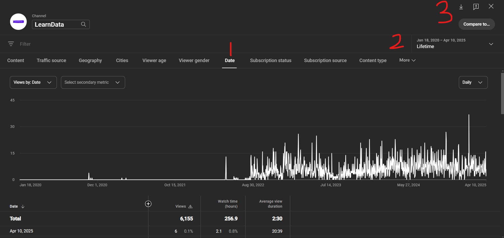

.png)
Imagine, as a YouTube content creator, you know how many views your videos will have in the coming days. Do you know how powerful such information is?
This allows you to target days to post new videos, which increases viewership. You can also know the days of the week when you are likely to get high viewership, to avoid posting on days with low engagement.
In this article, you will learn how to use Python to forecast your YouTube daily viewership for the next thirty days. We will use the Prophet library, which is used for time series analysis and forecasting.
Prerequisites
- An active YouTube and YouTube Studio account
- Jupyter Notebook, Google Colab, Kaggle, or any other environment that supports Python
- Pandas library installed
- Seaborn library installed
- Matplotlib library installed
- Prophet library installed
Step 1: Extract the Data
Go to your YouTube Studio account, under the Analytics tab, and click Advanced mode. Click on the Date tab (1) and select Lifetime under the Date dropdown (2). Next, click Download (3) to download the CSV file.

Open the Totals.csv file in the extracted folder. You will see the number of views you have from the first day you uploaded a video to your channel to the current date, the day the data was downloaded. The data has two columns: Date and Views. Check out this article if you want more detailed information on extracting YouTube studio data.
Step 2: Load and Visualize the data
Let’s load the file into our notebook
import pandas as pd
import seaborn as sns
import matplotlib.pyplot as plt
df = pd.read_csv("/content/Totals.csv")
df
Now let’s visualize the data to see the channel view over time.
from matplotlib import pyplot as plt
import seaborn as sns
def _plot_series(series, series_name, series_index=0):
palette = list(sns.palettes.mpl_palette('Dark2'))
xs = series['Date']
ys = series['Views']
plt.plot(xs, ys, label=series_name, color=palette[series_index % len(palette)])
fig, ax = plt.subplots(figsize=(10, 5.2), layout='constrained')
df_sorted = df.sort_values('Date', ascending=True)
_plot_series(df_sorted, '')
sns.despine(fig=fig, ax=ax)
plt.xlabel('Date')
_ = plt.ylabel('Views')
From the plot above, for a significant period in the beginning, the channel received very few or zero views and a clear inflection point where views suddenly started increasing, and from there, it maintained a high level of activity.
Step 3: Build the Forecasting Model
Before building the time series model, let’s rename the Date and Views columns in the data to ds and y, respectively. We are doing that because the Prophet library only recognizes those column names. Then, convert the ds to a DateTime class.
from prophet import Prophet
import matplotlib.pyplot as plt
df = df.rename(columns={"Date": "ds", "Views": "y"})
df["ds"] = pd.to_datetime(df["ds"])Now, let’s initialize and fit the model to our data.
model = Prophet()
model.fit(df)Let’s create a future data frame for the next 30 days
future = model.make_future_dataframe(periods=30)
forecast = model.predict(future)
forecast.columns['ds',
'trend',
'yhat_lower',
'yhat_upper',
'trend_lower',
'trend_upper',
'additive_terms',
'additive_terms_lower',
'additive_terms_upper',
'weekly',
'weekly_lower',
'weekly_upper',
'yearly',
'yearly_lower',
'yearly_upper',
'multiplicative_terms',
'multiplicative_terms_lower',
'multiplicative_terms_upper',
'yhat']The main column of interest is ds, the date of the forecasted point, and yhat, the forecasted value, is the predicted number of views on the YouTube channel for that day.
Let’s plot another time series, showing the forecast for the next 30 days.
# Plot the forecast
fig1 = model.plot(forecast)
plt.title("Forecast for Next 30 Days")
plt.xlabel("Date")
plt.ylabel("Value")
plt.show()
- The black dots above show the actual historical data
y; these are the observed values in the dataset. - The dark blue line shows the forecasted values
yhat. - The light blue shaded area is the uncertainty level, which shows the forecast’s confidence level. The wider the band, the less confident the model is.
The graph shows a clear upward trend starting in 2023, which Prophet successfully captured. There are also weekly fluctuations, which are the tiny ripples in the blue line; this reflects weekly cycles. The model is reasonably confident in the short term, but a significant spread indicates variability in the underlying data.
Let’s break the model into components such as trend and seasonality.
fig2 = model.plot_components(forecast)
plt.show()
The first plot, which shows the trend, shows that the channel’s YouTube presence significantly grew in 2022, and Prophet recognizes that upward shift as a long-term trend.
The second plot, which shows the weekly seasonality, shows that people are less engaged on weekends, especially Saturdays. This means the channel should avoid uploads on Saturdays and focus more on midweek to Thursday when there is peak traffic.
The last plot, the yearly seasonality, shows that the viewership peaks at the start of the year, again around September, and in late fall. There are slumps during the summer, likely due to vacations, less screen time, and holiday weeks like December.
Conclusion
You can see how we can extract much information that is not available on YouTube Studio Analytics just by using the daily channel statistics.
Note that our results are based on the YouTube channel data; yours can differ. You can apply this to your channel subscribers, likes, YouTube earnings, and other important metrics.
If you find this article interesting, don’t forget to check out my blog for other interesting articles, follow me on Medium, connect on LinkedIn, and subscribe to my YouTube channel.
Need Help with Data? Let’s Make It Simple.
At LearnData.xyz, we’re here to help you solve tough data challenges and make sense of your numbers. Whether you need custom data science solutions or hands-on training to upskill your team, we’ve got your back.
📧 Shoot us an email at admin@learndata.xyz—let’s chat about how we can help you make smarter decisions with your data.